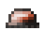
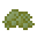

Передові матеріали
Передові матеріали
На додаток до примітивних будівельних матеріалів кам'яного віку, використання металевого інструменту дозволяє використовувати більш досконалі будівельні матеріали.
Зміст
1. Алебастр
2. Цегла та будівельний розчин
Plaster
Алебастр - будівельний матеріал, що виготовлено з гіпсу. Його можна виготовити безпосередньо з гіпсу, але ефективніше буде запечатати гіпс у діжці із 100 mB вапняної води на один шматочок.
Plaster Bricks


4
Plaster Decorations
Plaster can be dyed in a Barrel of dye into any color. Raw Plaster blocks can also be chiseled into Polished Plaster using the Smooth chisel mode, or crafted into stairs, slabs, or walls.
Сходи та плити
8
6
Цегла та розчин
Кам'яні цеглини можна виготовити за допомогою долота з деяких пухких камінців гірських порід. Щоб з'єднати ці цеглини у будівельний блок, треба використати будівельний розчин.
Розчин можна отримати з піску, що буде запечатаний у діжці з вапняною водою.
4
Також можна виготовити інші декоративні кам’яні блоки, наприклад, тріснута цегла, або точений блок. Мохове каміння можна створити у воді. Встанови кругляк, або цегляний блок поруч з моховим. Мох почне поширюватись на сусідні блоки під водою.